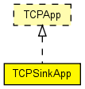

Accepts any number of incoming TCP connections, and discards whatever arrives on them. Compatible with both IPv4 and IPv6.
The following diagram shows usage relationships between types. Unresolved types are missing from the diagram. Click here to see the full picture.
The following diagram shows inheritance relationships for this type. Unresolved types are missing from the diagram. Click here to see the full picture.
| Name | Type | Default value | Description |
|---|---|---|---|
| address | string | "" |
may be left empty ("") |
| port | int | 1000 |
port number to listen on |
| Name | Value | Description |
|---|---|---|
| display | i=block/sink |
| Name | Direction | Size | Description |
|---|---|---|---|
| tcpIn | input | ||
| tcpOut | output |
// // Accepts any number of incoming TCP connections, and discards whatever // arrives on them. // Compatible with both IPv4 and IPv6. // simple TCPSinkApp like TCPApp { parameters: string address = default(""); // may be left empty ("") int port = default(1000); // port number to listen on @display("i=block/sink"); gates: input tcpIn @labels(TCPCommand/up); output tcpOut @labels(TCPCommand/down); }